Linux中基本的指令
一切皆文件
Linux讲究的是一切皆文件，在Windows下是文件的东西，在Linux中也是，在Windows下不是文件的东西，比如套接字，进程，甚至是硬件设备，在Linux下还是文件，你可以通过访问文件的方式来获取它们的信息，所以说要记住Linux下一切皆文件。
目录结构
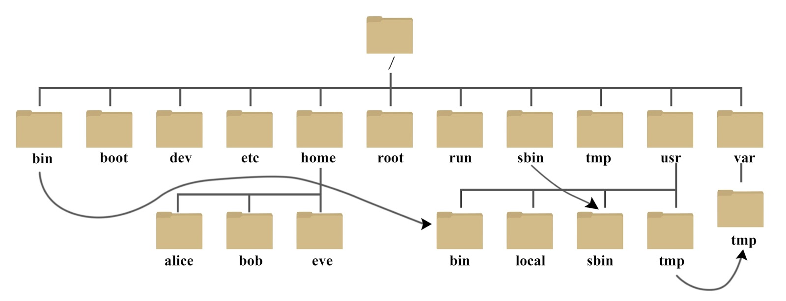
Linux目录结构十分重要，要熟练的掌握。接下来我们来看一看这些目录都是用来做什么的：
- /bin：bin是Binaries(二进制文件)的缩写，这个目录存放着最经常用的命令。
- /sbin：s 就是 Super User 的意思，是 Superuser Binaries (超级用户的二进制文件) 的缩写，这里存放的是系统管理员使用的系统管理程序。
- /home：存放普通用户的主目录，在Linux中每个用户都有一个自己的目录，一般该目录名是以用户的账号命名。
- /root：该目录为系统管理员，也称作超级权限者的用户主目录。
- /lib：系统开机所需要最基本的动态连接共享库，就类似于Windows下的DLL文件。几乎所有的应用程序都需要用到这些共享库
- /lost+found：这个目录是一个被隐藏的目录，一般情况下是空的，当系统非法关机后，这里就存放了一些文件。
- /etc：所有的系统管理所需要的配置文件和子目录。
- /usr：这是一个非常重要的目录，用户很多的应用程序和文件都放在这个目录下，类似Windows的program files目录。
- /boot：存放的是启动Linux时使用的一些核心文件，包括一些连接文件以及镜像文件。
- /proc：这个目录是一个虚拟的目录，它是系统内存的映射，访问这个目录来获取系统信息。不要动它，可能导致系统崩溃。
- /srv：service缩写，该目录存放一些服务启动后需要提取的数据。不要动它，可能导致系统崩溃。
- /sys：这是Linux2.6内核的一个很大的变化。该目录下安装了2.6内核中新出现的一个文件系统sysfs。不要动它，可能导致系统崩溃。
- /tmp：用来存放一些临时文件。
- /dev：类似Windows的设备管理器，把所有的硬件用文件的形式存储。
- /media：Linux系统会自动识别一些设备，例如光驱，U盘等等，当识别后，Linux会把识别的设备挂载到这个目录下。
- /mnt：系统提供该目录是为了让用户临时挂载别的文件系统的，我们可以将外部的存储挂载在/mnt上，然后进入该目录就可以查看里面的内容了。
- /opt：这是主机额外安装软件用到的目录，默认为空。
- /user/local：这是另一个给主机额外安装软件所安装的目录，一般是通过编译源码方式安装的程序。
- /var：这个目录中存放着在不断扩充着的东西，习惯将经常被修改的目录放在这个目录下。包括各种日志文件。
- /selinux：SELinux是一种安全子系统，它能控制程序只访问特定文件，有三种工作模式，可自行设定。
帮助指令
想必你也感觉到了，我们到现在为止虽然好像没做什么，但大多数都用到了各种指令，没错linux下我们需要熟练的使用这些指令，这样才方便我们的工作，所以接下来我们要开始接触各种指令，但在此之前我们先了解一个重要的指令，帮助指令。
第一个帮助指令是man [命令或配置文件]，比如man ls，我们可以通过这条指令知道ls命令是做什么的，以及它有没有其他的扩展选项，例如ls -a可以显示所有文件包括以“.”开头的隐藏文件。如果帮助信息很多没有显示完，可以使用space(空格键)翻页。（Tips：ls指令的选项可以叠加使用比如ls -la，单列显示所有文件，la选项不区分先后关系，也可以为al。）
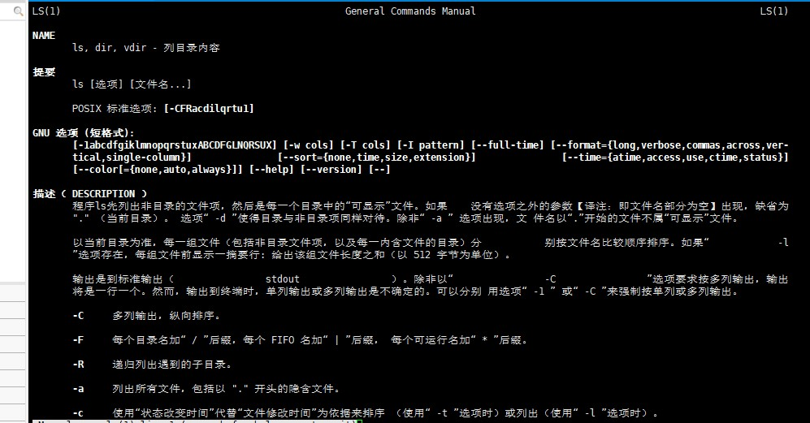
第二个帮助指令时help 命令，它可以获得shell内置命令的帮助信息。比如help cd。
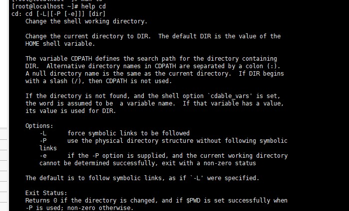
文件目录指令
Linux下一切皆文件，所以我们要想成为高手，就要知道怎么操作文件，所以我们接下来了解一下文件目录指令。
pwd指令
基本语法：pwd，用来显示当前工作目录的绝对路径。
ls指令
基本语法：ls [选项] [目录或是文件]，用来显示当前目录文件。
常用选项：-a，显示当前目录所有文件和目录，包括隐藏的。-l，以列表的方式显示信息，信息会展示的更为全面。
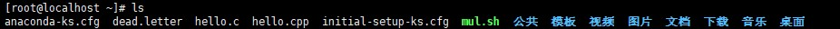
cd指令
基本语法：cd [参数]，用来切换到指定目录
cd~或cd，回到自己的家目录 cd..回到当前目录的上一级目录
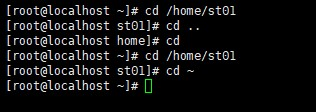
mkdir指令
基本语法：mkdir [选项] 要创建的目录，用来创建目录
常用选项：-p，创建多级目录
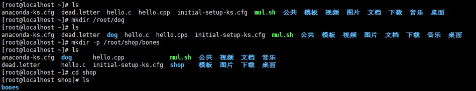
rmdir指令
基本语法：rmdir（或rm） [选项] 要删除的空目录，用来删除目录
注意，因为rmdir删除的是空目录，如果目录下有内容是无法删除的，这个时候要使用rm -rf删除。
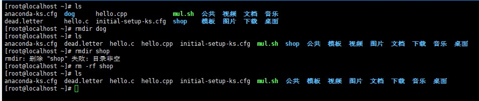
touch指令
基本语法：touch 文件名称，用来创建空文件
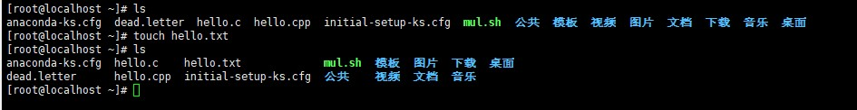
cp指令
基本语法：cp [选项] 文件夹(或文件) 目的地址，用来拷贝文件到指定目录
常用选项：-r 递归复制整个文件夹
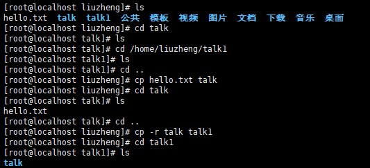
当我们重复的将一个文件(文件夹)复制到同一个目录时，就会发生覆盖，这个时候我们需要输入y才可以覆盖文件。当然我们也可以使用\cp [选项] 文件夹(或文件) 目的地址，强制覆盖。
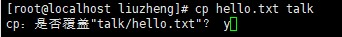
rm指令
基本语法：rm [选项] 要删除的文件或目录，用来移除文件或目录
常用选项：-r：递归删除整个文件夹。-f：强制删除不提示
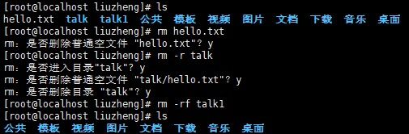
mv指令
基本语法：
mv oldfilename newfilename，用来重命名
mv 文件(文件夹)路径 目的路径，用来移动文件
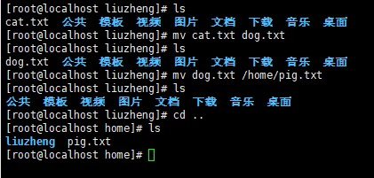
我们也可以在移动文件的同时修改文件名称。
cat指令
基本语法：cat [选项] 要查看的文件，用来查看文件内容
常用选项：-n：显示行号
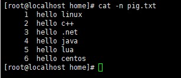
当然文件往往都有很多行所以为了方便浏览，我们可以加上管道指令|more，例如 cat -n pig.txt |more。
more指令
基本语法：more 要查看的文件
more指令是一个基于vi编辑器的文本过滤器，它以全屏幕的方式按页显示文本文件的内容。more指令中内置了若干个快捷键。如下图：

less指令
基本语法：less 要查看的文件
less指令用分屏来查看文件内容，它和more类似，当比more更为强大，less对显示大型文件具有较高的效率。
less相较于more而言，还可以使用/ 关键词来进行搜索，输入n向前查找下一个匹配的文本，输入N向后查找前一个匹配的文本。
echo指令
基本语法：echo [选项] [输出内容]，用来输出内容到控制台
head指令
基本语法：
head 文件，用来显示文件开头部分，默认为头10行
head -n 5 文件，用来查看文件头5行内容，5是变数
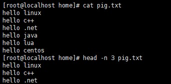
>指令和>>指令
基本语法：
ls -l>文件，列表的内容写入文件中(覆盖写)
ls -al>>文件，列表的内容追加到文件的末尾
cat 文件1>文件2，将文件1的内容覆盖到文件2
echo “内容”>>文件，将内容写入文件
tail指令
基本语法：
tail 文件，查看文件尾内容，默认为10行
tail -n 5 文件，查看文件尾5行内容，5是变数
tail -f 文件，实时追踪该文档的所有更新，指令执行后监控文件，有新内容写入后立马显示。
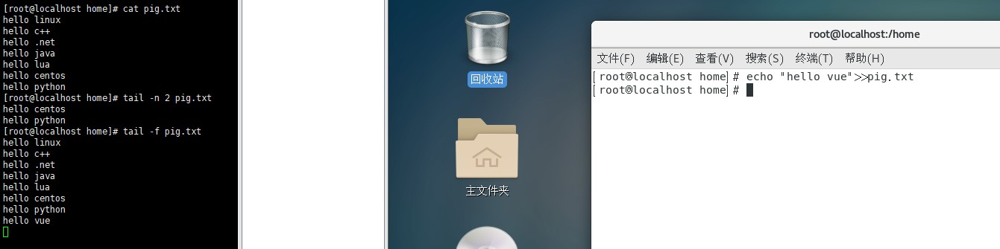
ln指令
基本语法：ln -s [原文件或目录] [软链接名]，用来给文件创建一个软链接
软链接就类似于Windows下的快捷方式，我们为一个文件或目录创造一个软链接，当我们访问这个软链接时就相当于访问原文件或目录。
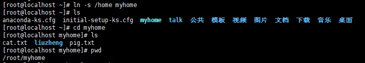
我们可以看到虽然我们通过软链接进入了原文件中，但路径还是软链接的路径，这点要注意。如果我们不想要这个软链接了，我们可以使用rm删除它。
history指令
基本语法：history，用来查看已经执行过的历史指令。
你也可以在history后加上一个数字，显示你想显示的后几条指令，比如history 10会显示后十条指令。输入！标号，就可以标号对应指令。
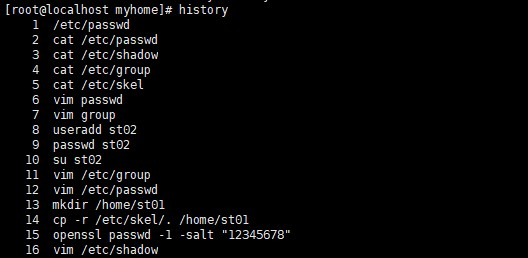
时间日期指令
Linux中还有其他功能的指令，比如时间日期指令
date指令
基本语法：
date，显示当前时间
date “+%Y”，显示当前年份
date “+%m”，显示当前月份
date “+%d”，显示当前是哪一天
date “+%Y-%m-%d %H:%M:%S”，显示年月日时分秒
注意，这里指令的大小写是规定好的，一定要按照上述大小写输入。
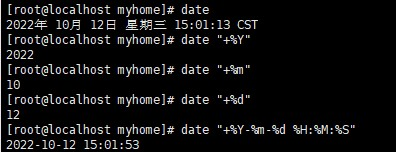
date -s指令
基本语法：date -s 时间(字符串)
我们可以使用这个指令修改当前系统的时间。
cal指令
基本语法：cal [选项]
选项：-m：显示星期一作为一周的第一天，-y：显示当前年份的日历。
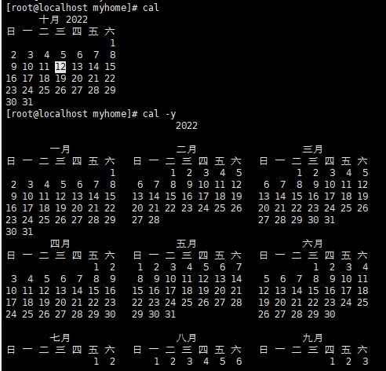
还可以使用cal+年份，显示指定年份的日历。
查找指令
我们在使用Linux的过程中，使用查找指令可以大大的方便我们的工作。
find指令
基本语法：find [搜索范围] [选项]，用来从指定目录下递归地遍历其各个子目录，将满足条件的显示在终端。
选项：-name<查询方式>，按照指定的用户名查找模式查找文件。-user<用户名>，查找属于指定用户名所有文件。-size<文件大小>，按照指定的文件大小查找文件。
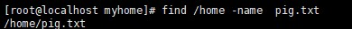
locate指令
基本语法：locate 搜索文件，同样是用来查找文件的，但是locate指令可以快速定位文件路径。
注意，由于locate指令基于数据库进行查询，所以第一次运行前，要使用updatedb指令创造locate数据库。
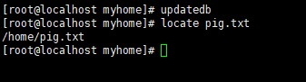
grep指令和管道符号|
基本语法：grep [选项] 查找内容 源文件，用于过滤查找。管道符“|”表示将前一个命令的处理结果输出传递给后面的命令处理。两者多联合使用。
选项：-n：显示匹配行及行号。-i忽略字母大小写。
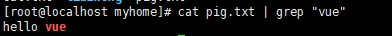
which指令
基本语法：which 可执行文件名称，用来查看可执行文件的位置
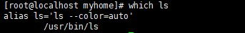
压缩和解压指令
我们在处理文件的时候也少不了压缩和解压的过程，Linux为我们提供了这样的指令。
gzip/gunzip指令
基本语法：
gzip 文件，用来压缩文件，只能将文件压缩为.gz格式
gunzip 文件，用来解压缩文件
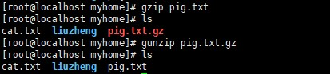
zip/unzip指令
基本语法：
zip [选项] xxx.zip，用来压缩文件和目录
unzip [选项] xxx.zip，用于解压缩文件
zip常用选项：-r：递归压缩，即压缩目录
unzip常用选项：-d<目录>：指定压缩后文件的存放位置
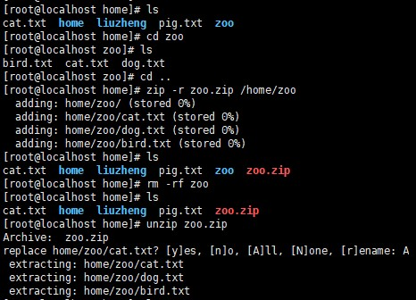
tar指令
基本语法：tar [选项] xxx.tar.gz 打包内容，用来打包目录
选项：-c：产生.tar打包文件。-v：显示详细信息。-f：指定压缩后的文件名。-z：打包同时压缩。-x：解包.tar文件。
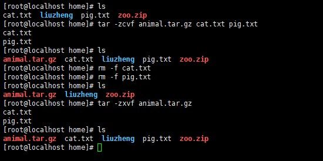
vi和vim
我们知道Linux一切皆文件，文件大多数都应该是可以更改的，所以Linux系统内置了vi文本编辑器，vim也是一个文本编辑器，不过vim具有程序编辑的能力，可以看做是Vi的增强版本，可以主动以字体颜色辨别语法的正确性，方便程序设计。代码补完，编译以及错误跳转等功能丰富。
vi和vim常用的三种模式
vi和vim有三种常用模式分别是正常模式、插入模式、命令行模式。
首先是正常模式，以vim打开一个档案就直接进入了一般模式了。在这个模式中可以使用上下左右移动光标，删除字符，复制粘贴等操作处理文件数据。
之后是插入模式，按下i，I，o，O，A，R，r都可以进入插入模式，但一般习惯按i，按esc可以退出插入模式，回到正常模式。
最后是命令行模式，在正常模式下，当我们输入“：”就可以切换为命令模式，在这个模式中，可以提供你相关指令，完成读取、存盘、替换、离开vim、显示行号等动作。
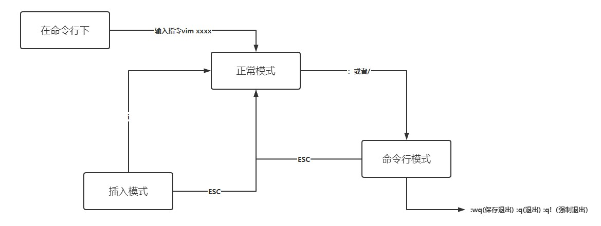
vi和vim快捷键
首先是基本的复制与粘贴操作，我们在正常模式下敲击yy就可以拷贝当前行，之后按p就可以粘贴当前行了，如果需要多行复制可以敲击数字加yy比如敲击5yy就可以复制当前行向下5行。有复制粘贴就会有删除，还是在正常模式下按dd就可以删除当前行，同样也可以进行多行删除操作。同样我们还有撤销操作，在正常模式下按u即可撤销。
我们还可以查找一个文本文件中的某个单词，我们在命令行模式下只需要使用“/关键字”，回车即可查找，输入n就是查找下一个。我们还可以使用“set nu”和“set nonu”显示和隐藏行号。我们也可以快速的转到最首行快捷键是gg，快速转到最末行G（shift+g）当然这个操作要在正常模式下进行。还有一个操作就是快速的转到某一行，比如我想转到20行只需要在正常模式下敲击2+0+shift+g即可，不过要注意的是20不要用键盘的小键盘输入。
 wechat
wechat alipay
alipay